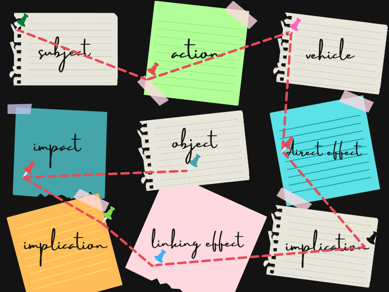
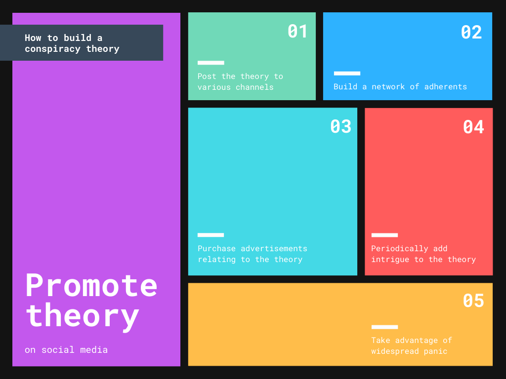

HOW TO BUILD A CONSPIRACY
A note from Abscissa
This story contains a conspiracy theory generator. The theories produced by this generator are not intended to be considered true by any means. They exist only as an example of how conspiracy theories are conceived.
Choose a topic
Believable conspiracy theories revolve around a topic that many people know about or recognize. These topics are usually broad areas of discourse in society. Successful conspiracy theories also often revolve around new or current events, which often provoke panic on their own. For instance, the Geostorm theory purported that the U.S. government was controlling weather after a trio of deadly hurricanes made landfall in 2017.
generated topic
Find an acting subject
The acting subject is the person (or people) who carry out an action in the theory. Usually, the subject is an inflammatory, controversial, or notable person. The subject also must have some connection to the topic, no matter how random. For example, in the "Stop the Steal" theory claiming that President Biden stole the 2020 election, Biden himself would be the subject.
generated subject
Identify a vehicle
The vehicle is what the subject does to accomplish something. A vehicle can be a physical object that the subject uses, or the immediate action they take. An illustration of this can be found in the FEMA Camps conspiracy theory, which says that FEMA (the subject) has built concentration camps throughout the U.S. (the vehicle).
generated vehicle
Build a link chain
|  |
Find connections between the core parts of the theory. Bring everything together to form a cohesive theory. |
Consider the impacts of the link chain
Here, you can take into account either the effect of the link, or simply the reasoning behind it. In the Microchipped Vaccines conspiracy theory, believers claim that Bill Gates (or a synonymous tech billionaire) distributed microchips in COVID-19 vaccines. The impact of this link chain is, of course, the ability of Mr. Gates to track anyone who is vaccinated against the disease.
generated impact
Summarize the links in a single statement
This is the most important part of the theory. It's the single phrase that every adherent can remember, and it sums up the core beliefs of adherents. In the Flat Earth conspiracy theory, adherents believe that "the Earth is flat." The statement is short, quick, and to the point. That makes the theory accessible. However, simultaneously, the statement may also not make much superficial sense. This is to hide the intricacies of the theory, which tend to be even more absurd than the surface.
generated theory
Add a touch of intrigue
If the theory doesn't have viral potential yet (due to some unique factor or interesting focus), spice it up with an intriguing implication that will draw in adherents. As an example, look to the QAnon conspiracy theory, which posits that there is a cabal of Satanic pedophiles conspiring against former President Donald Trump. The theory also supplementarily argues that Mr. Trump enlisted Robert Muller to prevent a coup d'état by members of the cabal.
generated intrigue
Select an audience
Carefully selecting the audience of a conspiracy theory is an important decision when directing it to success. By targeting specific populations, misinformists can deliberately convince people in the most efficient way possible. Until April, 2020, Facebook's ad targeting tools offered an option to target users interested in "pseudoscience." This feature was abused by at least one advertiser promoting the 5G conspiracy theory, which contends that electromagnetic radiation from 5G cell towers are dangerous for humans.
generated audience
Promote the theory
|  |
Promote the theory through posting, advertising, adherents, and taking advantage of widespread panic. Conspiracy theories spread fastest in times of crisis. |
On conspiracy
Conspiracy theories are everywhere. They pervade social media, take advantage of vulnerabilities during times of panic or crisis, and take hold because of basic human tendencies. Remember to never take anything you read on the internet at face value. Do your own research using reputable sources and find the truth. This feature serves as a warning: conspiracies can be anything, and they can be anywhere. Be vigilant, be careful, and be forewarned.